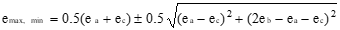
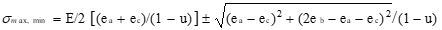

9 9 Material Strength**
9.1 Terminology
9.2 Material Stress and Strain
9.3 V-n Diagram
9.4 Strain Gauges
9.5 References
9 Abbreviations**
A cross-sectional area (ft2)
DLL design load limit
E modulus of elasticity or Young’s Modulus (lb/ft2)
e strain (non-dimensional)
EK gage factor
GW gross weight
KU effective gust velocity (ft/sec)
L lift force
L length (ft)
Nzb normal load factor, along aircraft z-axis
P applied load (lb)
R unstrained resistance
∆R change in resistance due to load
S wing area (ft2)
V flight speed
Vs stall speed
Ve equivalent airspeed
W aircraft weight
W/S wing loading
ν Poisson’s ratio
σ stress (lb/ft2)
σ air density (slugs/ft3)
9.1 Loads Terminology
Annealing A heat treatment that eliminates the effects of cold working.
9.0.0.0.0.0.0.1
9.0.0.0.0.0.0.2 Brittleness Measure of a material's lack of ductility (by one definition breakage at five percent or less strain implies brittleness.
Creep rate The rate at which a material continues to stretch when stress is applied at high temperature.
Cold Working Deformation of a metal below its recrystallization temp., thereby strengthening and reshaping it.
Design Load Maximum loads expected in normal service.
Limit
Ductility Ability of a material to deform without breaking.
Durability Ability to resist cracking, corrosion, thermal degradation, delamination, wear, and the effects
of foreign object damage over time.
Elastic Deformation of the material that is recovered when the applied load is removed.
Deformation
Elasticity Ability of a material to return to its undeformed shape after all loads have been removed.
Endurance Limit The stress below which a material will not fail in a fatigue test.
Factor of Safety Ratio of the predicted failure stress to the maximum stress anticipated in normal operation (DLL). For aircraft, the Factor of Safety is typically 1.5 DLL.
9.0.0.0.0.0.1
9.0.0.0.0.0.2 Fatigue The failure of a material when subjected to repeated loads less than the ultimate sustainable load. This effect is presented in an S-N diagram such as

Fatigue life The number of cycles at a particular stress before a material fails by fatigue.
Hardness Resistance to plastic deformation resulting from impact loads.
Impact Energy The energy required to fracture a specimen when the load is suddenly applied.
Limit Stress The maximum stress where the Modulus of Elasticity remains constant (proportional limit).
Margin of Safety Any load-bearing capability greater that the ultimate load, calculated as
failure load as a factor of DLL - 1
1.5 DLL
Notch Sensitivity Measure the effect of a notch on impact energy
Plastic Permanent deformation of a material applied load. Plasticity Material deformation charac
Deformation teristics beyond its elastic limit.
Resilience A measure of the amount of energy a material can absorb elastically in a unit volume of the
material.
Rupture time The time required for a specimen to fail by creep at a particular temperature and stress.
Stiffness A qualitative of the elastic deformation produced.
Strain (e) The deformation of a material under an applied load.
Strength Ability to withstand external loads without failure.
Stress (σ) The ability of a material to react a force distributed over some area.
Thermal stress Stress resulting from expansion (strain) of a material subjected to heating.
Tempering A low-temp. heat treatment which reduces hardness.
Tensile strength The stress that corresponds to the maximum load in a tensile test.
Toughness Total energy absorbed before failure occurs (area under the stress-strain curve).
Transition Temperature The temperature below which a material behaves in a brittle manner in an impact test.
True Strain The actual strain produces when a load is applied.
Ultimate Stress The stress point at which additional load cannot be reacted.
Wing Loading Aircraft weight per wing area, W/S, a ready measure of air loads for steady level flight.
Yield Stress The stress applied to a material that just causes permanent plastic deformation.
9.2 Material Stress & Strain
Stress (σ) is the ability of a material to react a force distributed over some area. In the simple axial load case this can be presented as
σ = P/A
where P = the applied axial load
A = cross-sectional area over which the load is applied
Strain (e) is the deformation of a material under an applied load. In the basic form this can be presented as
* *
e = ∆L/L
where ∆L is the change in dimension due to some load, and L is the original dimension
The stress-strain relationship is linear (proportional) for a large percentage of the applied load to the maximum, as expressed by the Modulus of Elasticity (Young’s Modulus)
E = σ/e
A typical stress & strain relationship for a material is illustrated as

9.3 V-n Diagram
Flight Path Normal Load Factor (Nzw) can be expressed during level flight, as
Nzw= 1/cosφ = L/W
where CL = lift coefficient
Fn= net thrust
L = lift force = wing lift + thrust lift = CLqS +FnsinαF
q = dynamic pressure
S = wing area
W = gross weight
αF = incidence angle between thrust line and relative wind
φ = angle of bank
Body Axis Normal Load Factor (Nzb) is calculated as
Nzb = \[*N~zw~*-*N~xb~*sinα\]/cosα
€
where Nzb = load factor along aircraft body x-axis
α = angle of attack
For the simplified case of negligible thrust lift, the maximum achievable Nzb at any flight speed can be calculated as
Nzb = (V/Vs)2
where both speed must be the same units
(i.e., true, equivalent, calibrated)
V = flight airspeed
Vs = stall speed
A general normal load flight envelope (V-n diagram) would appear as
• The envelope typically varies with: asymmetric loading; aircraft configuration; for air loads other than along the normal axis; and other structural, system, and safety considerations.

• It is frequently desirable to correct measured (test) Nzb data to a standard weight or design gross weight (GW) using the relationship
Nzb= (test Nzb)(Wt/Ws)
where Wt = test weight
Ws = standard weight
• The increase in load factor due to a vertical gust (∆n) is calculated as
€
∆n = 0.115mVe(KU)/(W/S)
where m = slope of CLα curve
Ve = equivalent airspeed (knots)
KU = effective gust velocity (fps)
W/S = wing loading (psf)
9.4 Strain Gages
The three strain gage configurations most commonly used are

Strain (e) is measured using the electrical resistance measured via the strain gage in a material subject to load. For the uniaxial gauge
K = (∆R/R)/e
where K = gage factor (provided by manufacturer)
R = unstrained resistance
∆R = change in resistance due to load
(+∆R for tension)
• For the bi-axial gage oriented coincident with the principal axes (maximum strain), each leg of the gage is analyzed as a uniaxial gage using the above equation for the principle strains. The
associated stresses are
σmax = E(emax + υemin)/(1 -υ2)
σmin = E(emin + υe max)/(1 - υ2)
where emax and emin are the measured principal strains in the appropriate legs of the bi-axial gage, E is the Young’s Modulus of the material, ν is Poisson’s ratio for the material. (ratio of compression and tension strains)
• For the Rosette gage, the principal strains and stresses are derived as


where e’s denote the strains in each of the three legs of the Rosette (+ is used for the maximum and - for the minimum).
To accurately measure the very small resistance changes in a strain gage, a Wheatstone Bridge is typically used

9.5 References
9.0.0.0.0.0.3 9.1 Dole, Charles E., Fundamentals of Aircraft Material Factors, University of Southern California, Los Angeles, California, 1987.
9.2 Norton, William J., Structures Flight Test Handbook, AFFTC-TIH-90-001, Air Force Flight Test Cen ter, Edwards AFB, California, November 1990.
9.0.0.0.0.0.4
9.0.0.0.0.0.5 Additional Reading
Military Specification Airplane Strength and Rigidity - General Specification, MIL-A-8860.
Military Specification Airplane Strength and Rigidity, Sonic Fatigue, MIL-A-008893.